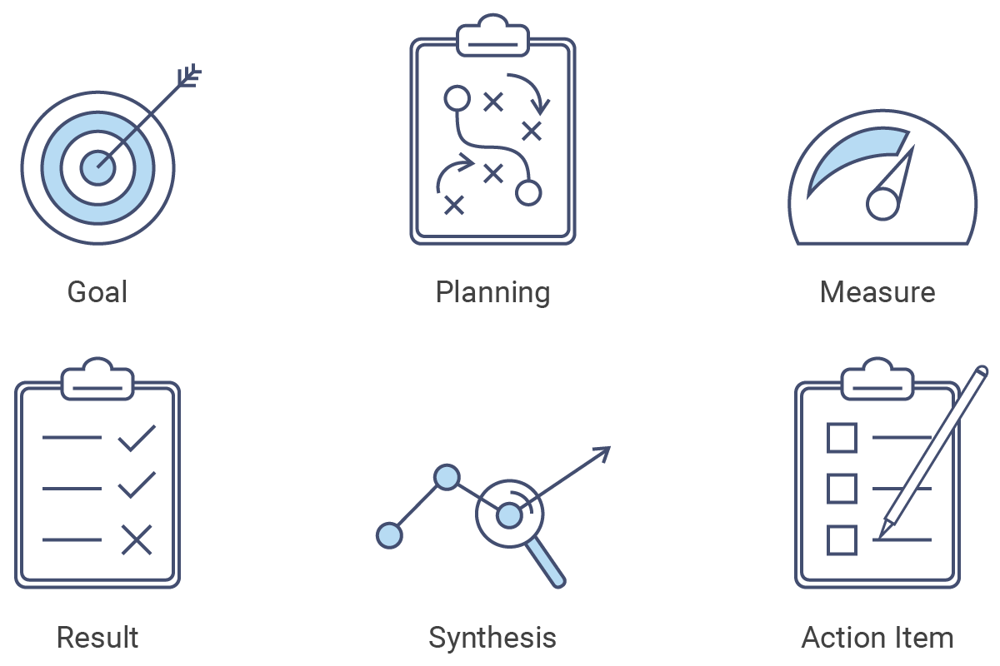
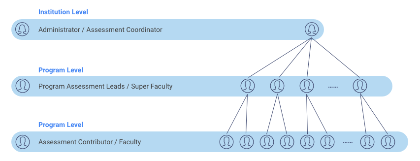
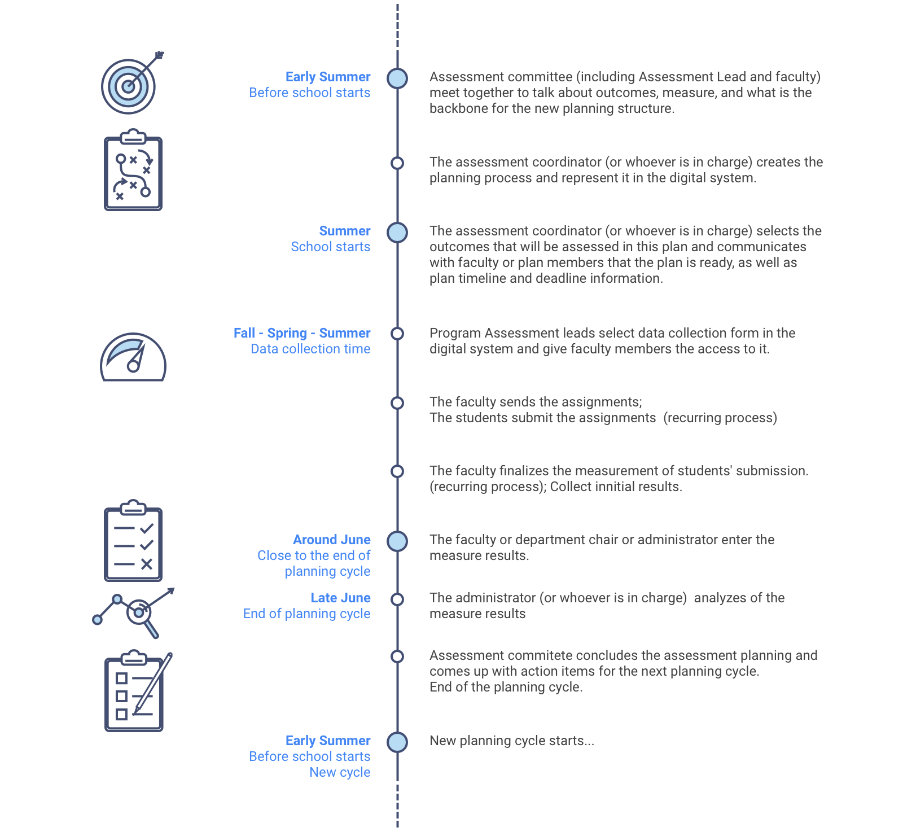

Background
What we are doing
With the merger and rebranding of our new company, we are working on the new generation of assessment and accreditation platform for high education institutions.

Who we are designing for

Universities and colleges usually have a multi-level organization hierachy. Assessment Coordinator or Unit Administrator in an institution is usaually the creator of assessment plans.
Each level has their goals and objectives. Assessment Leads are the contact people for each organization. They are responsible for entering the objectives assessment results during each assessment period. These assessment results can be rolled over to support higher level organization's objective assessment.
In each program, faculty members work as assessment contributors, to score students' assignments, work, performance and provide these data to their Assessment Lead.
When and How

We are working on a platform that makes the data collection and assessment collaboration easier and more efficient. We also aim to encourage a better assessment culture. Our product is still under development. Feel free to contact me in person to see the new workflow, wireframes, prototypes, and more.
See Details
Please see details in the project document:
Full Project Document